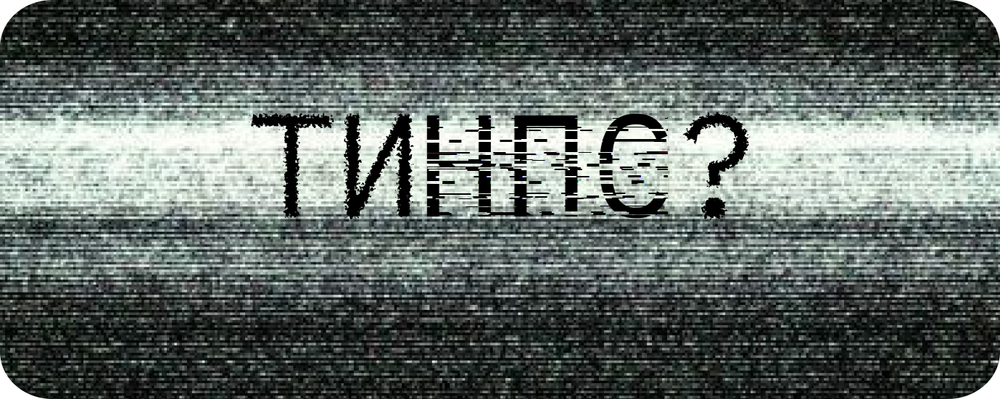

НПС (NPC) — це неігровий персонаж (Non-Playable Character) у відеоіграх, яким не керує гравець, а лише скрипт чи програма. У сленгу та мемах «НПС» називають людей, що поводяться передбачувано й шаблонно, ніби діють за заздалегідь прописаним сценарієм. Вони не мають власного мислення чи індивідуальності: повторюють думки й переконання інших, беруть перший-ліпший тренд із тіктоку чи коментарів і відтворюють його просто тому, що «ну всі так кажуть». Часто такі люди не мають інтересів чи хобі — їхні дні виглядають однаково, без нових захоплень або ініціативи, що ще більше підсилює враження «фонового персонажа».

пройди тест та дізнайся


Слово «НПС» використовують у ситуаціях, коли поведінка людини здається надто автоматичною.